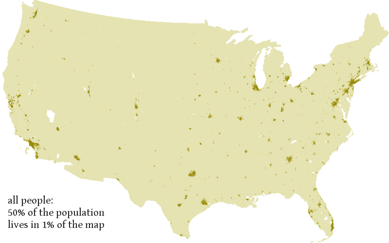
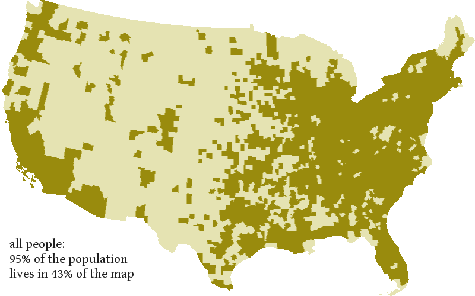
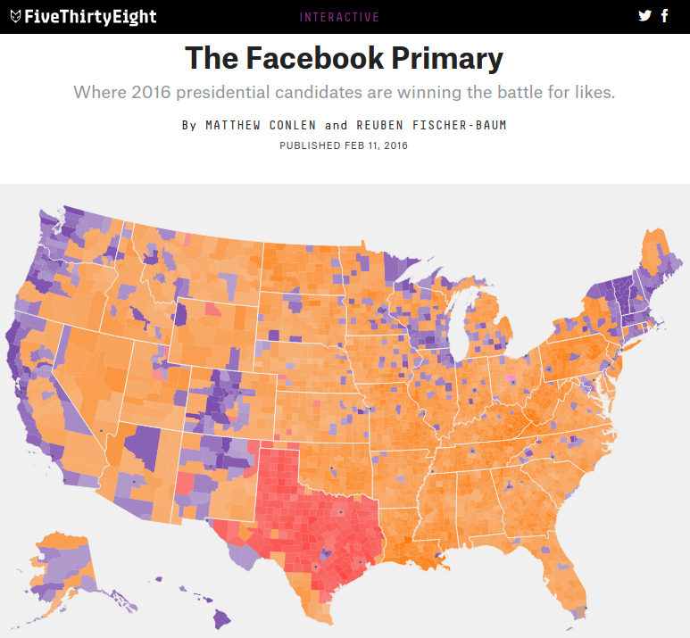
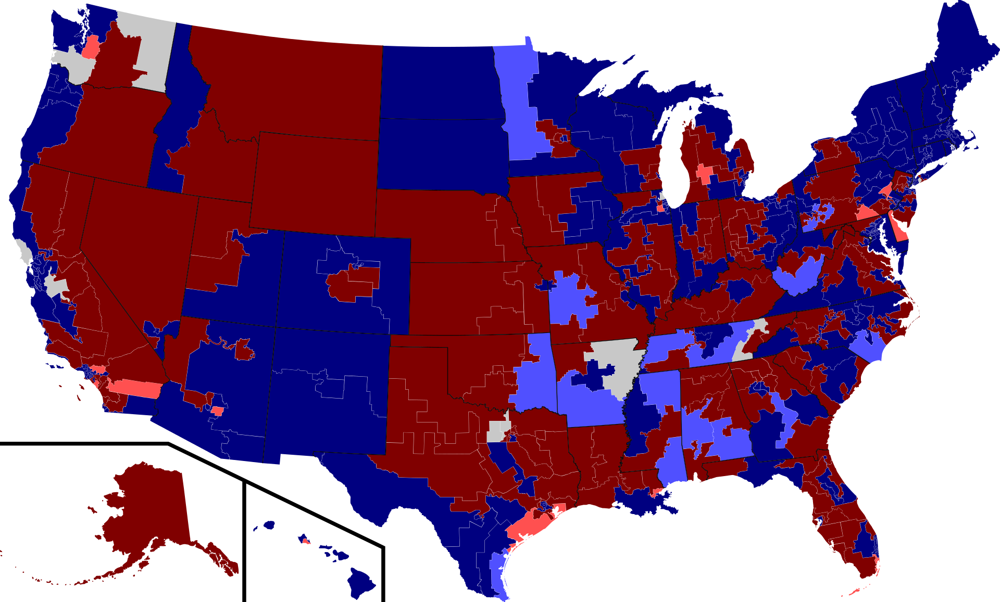
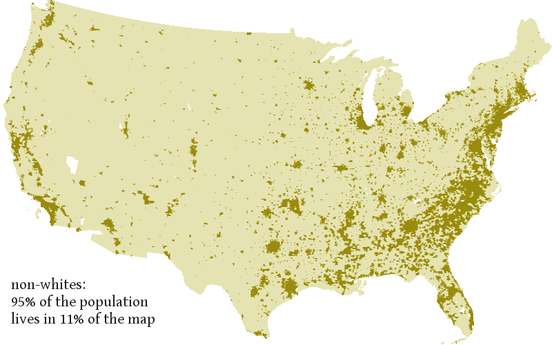
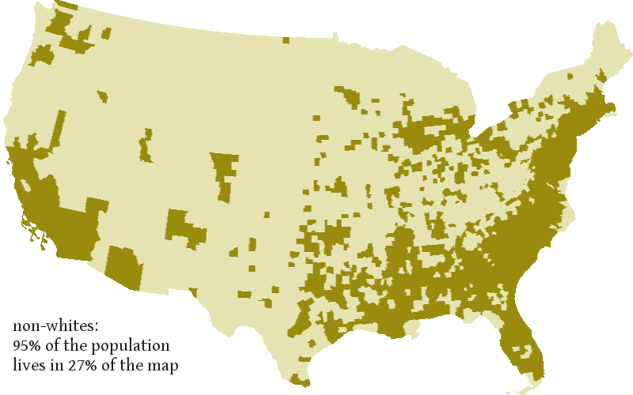
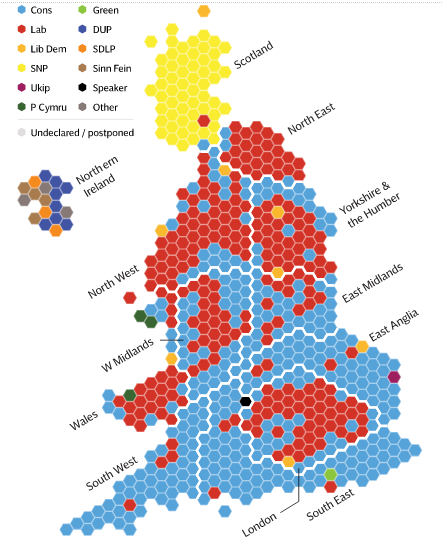

how maps lie:
the next time you look at a map, think about who doesn’t appear in it. ZIP FileTAR BallGitHub
Use Python, PIL, and PyProj to show latent bias in maps
Credits Author
Joshua Tauberer, Ph.D.
Edited by the Commerce Data Service
Tyrone Grandison, Ph.D.
Star Ying
Foreword from the Commerce Data Service:
A recent post by Joshua Tauberer, Ph.D. here shows how one of the most common visualizations used, the map, can contain inherent bias. We here at the Commerce Data Service were so impressed with his analysis and concise message that we wanted to mirror that original post as a Commerce Data Usability Project tutorial. What is presented below is his original post (with some minor edits on our part) and links to both his original Github repository and .
Maps can lie
Maps tell a story. And maps can also lie. Everyone already knows from The West Wing that with a poor choice of map projection — like on most maps — Greenland is too big and Africa is too small.
But there’s another problem: Because we don’t all live evenly spaced throughout the world, demographic maps favor populations that live in low density areas. Here’s why that’s meaningful:
Although racial minorities make up 26% of the U.S. population, they account for just 16% of the space on typical demographic maps of the United States. Maps could be a reason policymakers don’t focus on minority issues.
The 50% of the U.S. population in the most dense part of the country lives in just 1% of the nation’s land area. Who actually lives in the 99% of the country we see?
Maps of political sentiment give more space to the political right. Although Obama took just over 50% of the vote in the 2012 election, his voters account for only 38% of the space on a typical election map — making it look like his opponent should have won.
It’s not surprising that there are disparities in how populations are represented following the urban-rural divide. But it is alarming just how large those disparities are.
Just the Basics
Let’s start with the basics: Most Americans in the contiguous United States live in or near metropolitan areas.
All of those people — 50% of the U.S. population — inhabit just 1% of the land area:

And, the converse is also true: about 50% of the country’s land area is inhabited by just 1% of the population.
In a typical demographic map, counties (or equivalent) are colored according to some measurement. Grouping people into counties evens out the population density, slightly. When you group individuals into counties, half of the map (57%) is inhabited by 5% of the population. Here’s how that looks, with most of the Midwest and West empty:

That’s a problem.

No one actually lives in most of the places demographic maps like these portray, like this one from FiveThirtyEight (at left).
It’s the same 5% of the population who live in most of these maps who we are looking at over and over again.
And most of the other parts of the map are not representative of the population as a whole either because urban areas are disproportionately squeezed.
How to know
To quantify how people show up on a map, I combined the U.S. Census’s 2010–2014 American Community Survey 5-Year Estimates (ACS) with the U.S. Census’s 2014 TIGER geospatial data, which says where those people are located. The short story is I made a separate image of the 71,954 Census tracts and the 3,108 counties in the contiguous United States and counted up how many pixels each tract and county took up in the image. (See the end of the post for further details.)
When I say a “typical map” I’m referring to county-by-county demographic maps, and when I say “land area” I’m using the smaller Census tracts to see where exactly people live. When I say a population “accounts for” a proportion of the pixels on a map, I’ve apportioned parts of each pixel on the map to demographic groups based on who is living in each pixel.
This is a problem for anyone who lives in a city.
Although 5% of the U.S. population takes public transit to work, they account for only 1% of the pixels on a typical map. 38% of the U.S. population lives in multi-family housing structures (what the ACS calls single-family-attached and 2-or-more-unit housing structures), but those individuals account for just 29% of the pixels on a typical map.

When I previously wrote about this in 2013, paying particular attention to how political information is displayed in maps like the map on the left from Wikipedia, I found that six congressional districts, all in New York City, are smaller than one pixel in a typically sized map. One-person-one-vote loses meaning if some votes are too small to see.
And it’s a problem for racial minorities
And it’s a problem for racial minorities (those who identified as a race other than “white”). These individuals are given half as much space in a typical map per capita as white Americans!
That’s because racial minority individuals are even more clustered in high-density areas than the population as a whole. Here’s where 95% of racial minority individuals live:

Here’s how that looks on a county-by-county map (if you want to compare that to the map earlier of the U.S. population as a whole):

If you apportion all of the pixels on a typical map by the demographic breakdown in the pixel, although racial minorities make up 26% of the U.S. population, they account for just 16% of the pixels. In other words, for every pixel that represents a white person, only 0.53 pixels represent a racial minority.
The next time you look at a map, think about who doesn’t appear in it.
The rural-urban divide
As I mentioned in the introduction, the rural-urban divide also affects political maps. Using the 2012 presidential election results, while Democrats were 51% of the population they accounted for only 38% of the space on a typical election map. Or, for every pixel that represents a Republican, only 0.59 pixels represent a Democrat.
The last demographic measurements I looked at were household income and poverty status, and fortunately the distortion doesn’t affect, if not helps, these individuals:
16% of the population lives with an income below the poverty line (as defined by ACS). They account for 17% — about the same proportion — of the space on a typical map.
The 50% of the population living in the tracts with the lowest median household income accounts for 79% of the space on a typical map — i.e. far more than their proportional share.
Poverty affects both rural and urban areas, of course, so it makes some sense that we wouldn’t see a distortion here. The distortion in income is probably explained just by the cost of living being lower in rural areas.
What is there to do about it?
For one, use a cartogram wherever possible. A cartogram allots equal area in a map to equally meaningful units. For a demographic map, a cartogram would ensure that every individual is represented by the same amount of space.
If this were about demographic statistics, the states would be sized so that their area is proportional to their population.
Cartograms are often derided as ugly. And bad ones certainly are. But they can also be quite elegant, as in the The Telegraph’s U.K. election results map in the form of a grid of hexagons (which I’m told is common for representing the U.K.). Each hex represents one seat in Parliament.

It’s hard to make cartograms, and even harder to make cartograms that are intuitive to understand. That’s in part because of readers’ lack of familiarity, which can be fixed by creating more cartograms.
Alternatively, don’t use a map.
No map at all is better than a map that perpetuates injustice.
So as my friend Ben Klemens sums up-
This isn’t the huge-Greenland-tiny-Africa problem.
You’ve probably seen the West Wing episode when cartographers explain that maps distort the relative size of countries. Greenland looks big but it isn’t. This is a well-known problem with the Mercator projection, which is fantastic if you are navigating the high seas but awful if you are coloring in the boundaries of countries to display things like population demographics.
With an equal-area map projection like Gall-Peters, every area on the Earth’s surface is represented by an appropriately sized area on the map, but at the cost of distorting shapes.
I’ve used an equal-area projection for the maps in the post. The problem I’m discussing isn’t the projection: it’s the distribution of people.
Methodology
I put each of the the 71,954 Census tracts and 3,108 Census counties in the contiguous United States that have at least one resident into an 800-by-500 pixel map of the contiguous United States in an Albers Equal Area projection. Then I counted how many pixels each tract and county took up in the final map. Where these geographic units co-occurred at a pixel, I apportioned the pixel equally among the units. Tracts and counties were drawn no smaller than a single pixel.
I then apportioned the pixels to people according to population ratios within each tract or county. For instance, if a tract of 4,000 people is 75% right-handed and that track is represented by 4.8 pixels on the map, I would apportion 3.6 pixels to right-handed individuals and 1.2 pixels to left-handed individuals. That’s what I mean above when I say a population “accounts for” a certain number of pixels.
My images, except where noted, are plotting tracts. That’s because tracts are a better representation of how much land area people are inhabiting, and they produce nicer images. But most demographic maps are drawn at the level of counties. So when reporting numbers, I used “land area” to refer to an analysis based on tracts and “typical map” to refer to an analysis based on counties. Most of the numbers come out around the same in both levels of detail.
CHANGED on FEB. 13, 2016: When I first posted this (yesterday) I had only done an analysis based on tracts. Most maps are drawn by county, though. So on Feb. 13 I revised the numbers that refer to “typical maps” to be based on a county-by-county analysis. The numbers were only slightly different.
Getting Started In this tutorial, we'll go over how to collate the required data from the PTMT web site using Python web scraping, then walk through creating the visualization in Tableau Public. Follow along in the Jupyter Notebook below or check out the code files at Github.